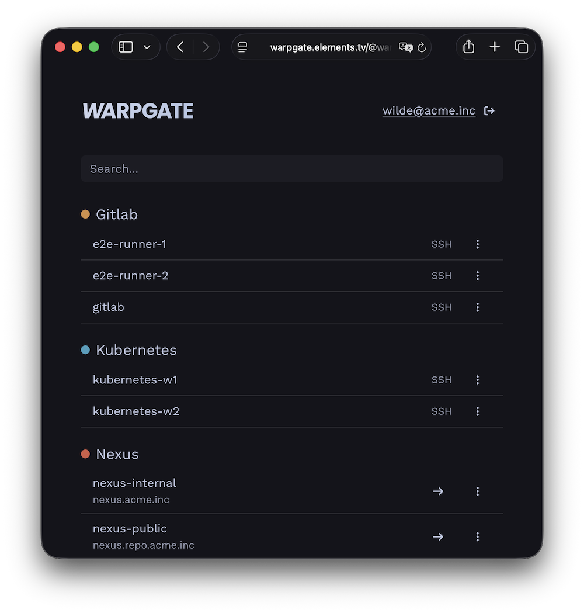
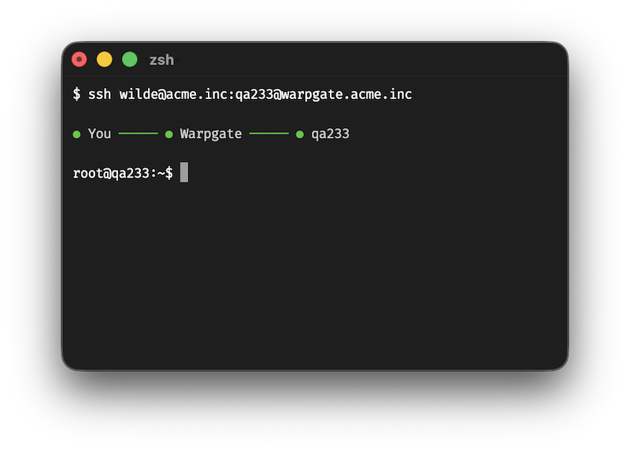
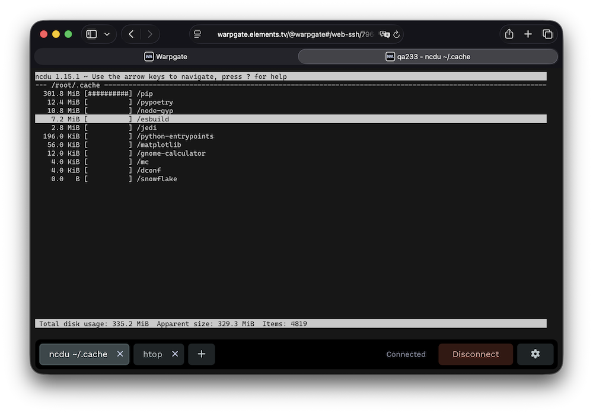
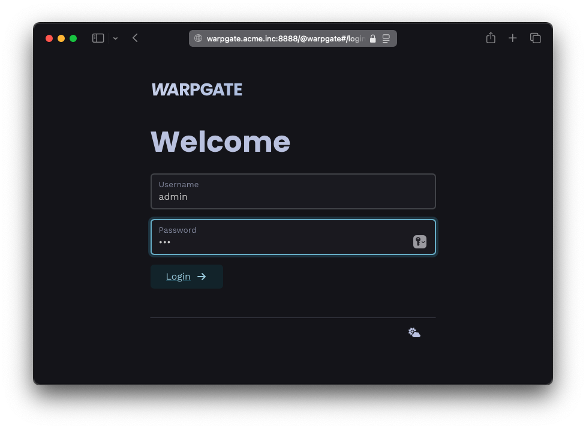
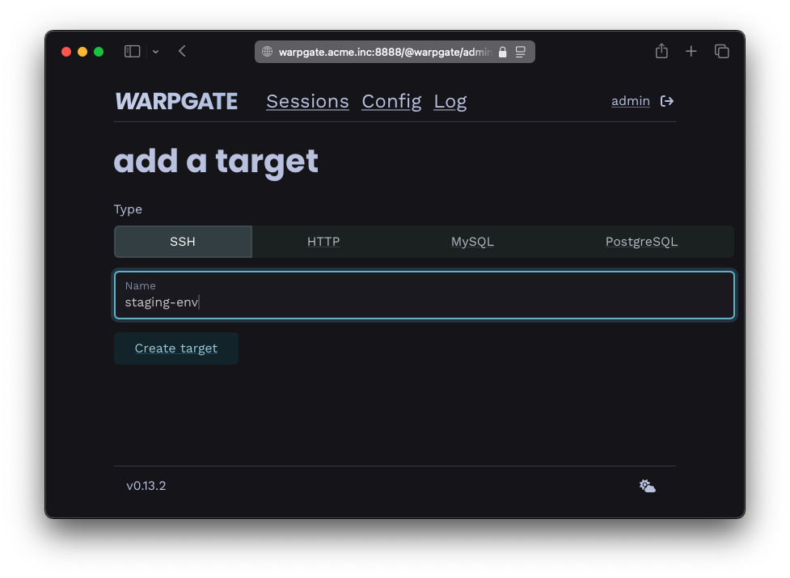
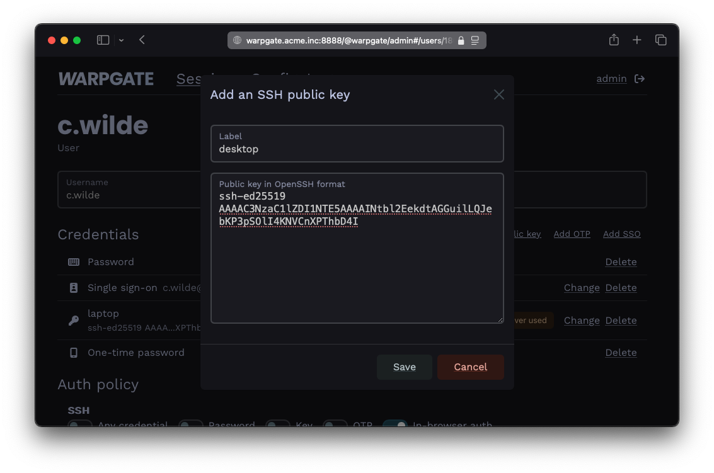
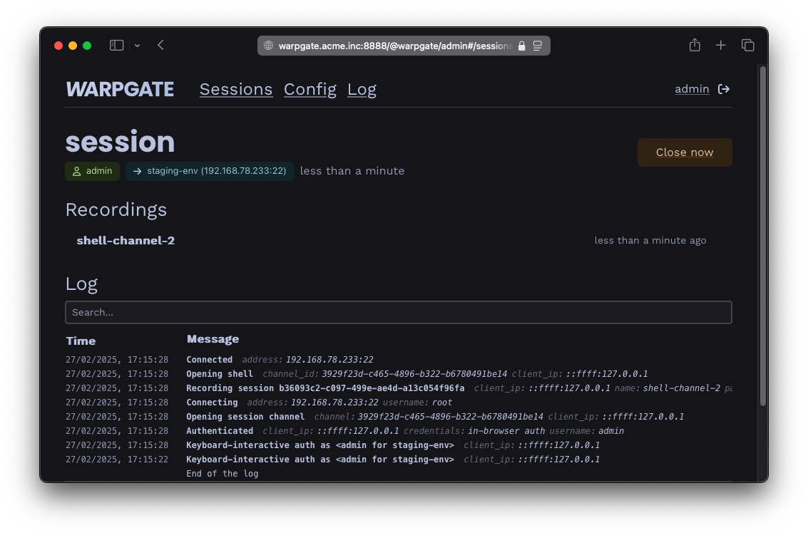
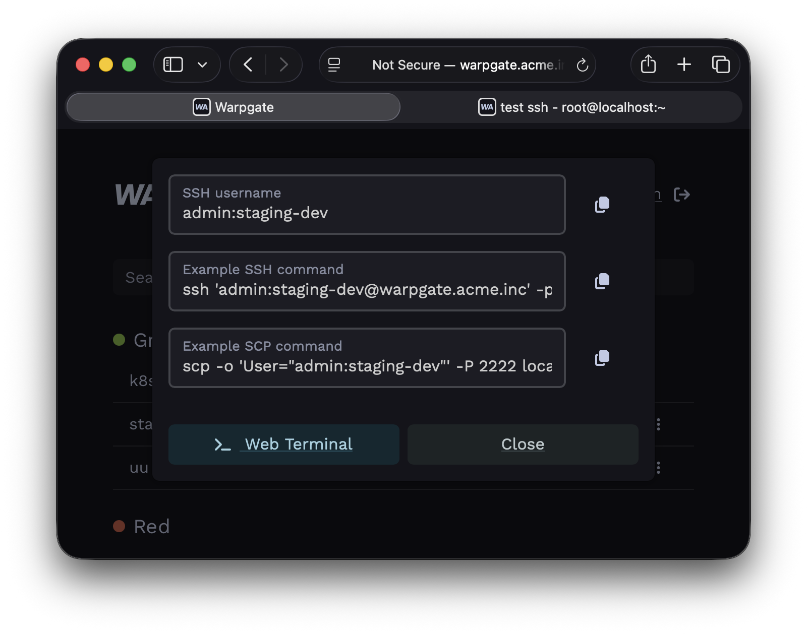

The last bastion.
Secure access to SSH, HTTPS, RDP, VNC, Kubernetes, PostgreSQL and MySQL targets with SSO and RBAC.
No client app.

Elevator pitch
Warpgate is a fully transparent proxy/bastion for your internal infrastructure that lets you skip manual authorized_keys management and both assign and audit access in a single place.
It is an open-source alternative to Teleport, StrongDM or Boundary — or to a VPN — minus the client apps and connection rituals that your users must learn.
Get it running in 15 minutes:
- add your internal targets
- assign them to user groups
- tell your users where to log in.

No client
Warpgate directly exposes native protocol listeners.
DATABASE_URL.Not a jump host
Warpgate handles authentication, and then transparently hands off the connection to the target server, while saving a live session record for audit.
Built-in 2FA, SSO and brute-force protection keep the front door locked.

No SaaS bullshit
Warpgate is a single binary (or a Docker image) that you download and run locally on your own infrastructure.
No paywalls
Warpgate is 100% open-source, free and will stay this way forever.
It is financed through support contracts, and custom-order feature development.
This allows it to escape the otherwise inevitable cycle of enshittification.
Pro Support →Production operations
Run multiple Warpgate nodes behind a load balancer, share state through the database, and store recordings in S3-compatible object storage. Warpgate 0.27 also adds audited RDP and VNC desktop access.
Need help validating a production deployment? Get maintainer support →Operations
From five targets to hundreds
Start in the admin UI, then manage larger installations through the API, Terraform, Helm or the community-maintained Kubernetes operator.
At a glance
How the access models compare
Compare what users install, where access is enforced, what gets recorded and which infrastructure you operate.
| What changes | Warpgate You're here | Teleport Full comparison → | SSH jump host | VPN | StrongDM Full comparison → | Boundary Full comparison → | WALLIX Full comparison → |
|---|---|---|---|---|---|---|---|
| Access boundary | Per resourceAssign individual services to users or roles. | Per resourceRole-based access to enrolled resources. | Usually per host[1]Reach expands from the jump server. | Usually per network[2]Users enter a routed network segment. | Per resourceRole grants; Enterprise policies can refine access. | Per targetRole grants authorize sessions to targets. | Per resourceAuthorizations bind user groups to target groups. |
| Target provisioning | Once per targetAdd it in Warpgate; SSH normally requires a Warpgate public key in authorized_keys. |
Enroll each resourceUsually install or configure a Teleport service or agent. | Usually per user and host[1]Manage target credentials or SSH trust. | Once per network[2]Configure routing and policy; targets stay unchanged. | Once per resourceAdd it to StrongDM; a gateway must be able to reach it. | Once per target or host setDefine the endpoint and its worker path. | Once per targetDeclare the device and account; nothing is installed on targets. |
| User setup | Standard clients or browserNo Warpgate client to install. | Teleport client or webUse tsh, Teleport Connect or the Web UI. |
SSH client configOften a ProxyJump entry. |
VPN software or profileClient, browser flow or OS setup varies by provider. | StrongDM app or CLIA StrongDM client is required. | Boundary clientUse the CLI, Desktop app or Client Agent. | Standard clients or browser[7]A tunnelling client is needed for databases and other raw-TCP targets. |
| Identity | Built inOIDC SSO, TOTP and SSH keys. | Built-in MFASSO availability depends on edition. | Assembled from componentsUsually SSH keys or certificates, PAM and external identity integrations. | Provider-dependent[2]Usually tied to the VPN appliance or IdP. | SSO + MFA[5]Native MFA is available; SSO MFA can come from the IdP. | Password, OIDC or LDAP[6]MFA comes from the OIDC provider; LDAP depends on edition. | SSO + MFASAML, OIDC, LDAP/AD, RADIUS, Kerberos and X.509. |
| Audit detail | Protocol-aware[4]Queries and API calls; SSH command detection is heuristic. | Protocol-awareDetailed audit events across supported resources. | Connection-level[1]Deeper logs need target-side tooling. | Network-levelConnection metadata, not application activity. | Protocol-awareDetailed logs across a broad resource catalog. | MixedSSH and RDP aware; other targets use TCP tunnels. | Mixed[7]Aware of its session protocols; raw TCP is captured as packets. |
| Session recording | SSH, Kubernetes, RDP + VNC[4]Replay in the admin UI; databases use query logs and HTTP is not replayed. | SSH, Kubernetes and desktopDatabase and app activity is captured as events. | Not built inRequires separate target-side tooling. | Not application-awareA VPN does not record target sessions. | SSH, RDP + Kubernetes[5]Replayable sessions; databases use query logs. | SSH and RDP[6]Enterprise and HCP Plus only. | SSH, RDP, VNC + webVideo and terminal replay with real-time monitoring. |
| Infrastructure | Single binary + databaseRuns entirely in your infrastructure. | Service cluster or cloudMultiple services and enrolled resources. | SSH serverSmall footprint, operated by you. | Gateway or serviceSelf-hosted and SaaS options exist. | SaaS control planeYou operate gateways or relays. | Controllers and workersSelf-hosted or managed through HCP. | Appliance or SaaSSelf-hosted appliance, cloud image, or WALLIX-hosted. |
| License / model | Apache-2.0Free, with every feature included. | Restricted Community binaries[3]Free only for companies with fewer than 100 employees and under US$10M in annual revenue. | Usually open source[1]Built from standard SSH components. | Varies[2]Open-source and commercial options. | CommercialSubscription service. | BUSL Community + commercial[6]Self-hosted Enterprise and HCP are commercial. | CommercialProprietary; subscription per asset or per user. |
Products and edition boundaries change. Follow the linked comparisons for details and verification dates.
- SSH jump host: “Usually” describes a conventional shared bastion. Firewall rules, SSH restrictions, certificate authorities and additional tooling can centralize credentials, narrow access or add recording; those are deployment choices rather than built-in jump-host capabilities.
- VPN: Network-level access is common, but VPN and ZTNA products can enforce per-user or per-service policy. Identity, hosting and licensing depend on the selected implementation.
- Teleport: Teleport’s official Community binaries use a commercial license. Free company use requires both fewer than 100 employees and less than US$10M in annual revenue. The source code remains AGPL-3.0. Teleport feature matrix.
- Warpgate: SSH command detection is a heuristic audit aid, not a security boundary. Replay is available for SSH, Kubernetes interactive streams, RDP and VNC; databases expose query logs, while HTTP sessions are not replayed. SSH auditing and protocol support.
- StrongDM: Access policies are an Enterprise feature. StrongDM documents session replay for SSH, RDP and Kubernetes; database activity is captured as query logs. Access policies and audit logs.
- Boundary: LDAP and session recording are edition-dependent; recording is available for SSH and RDP in Enterprise and HCP Plus. Community is source-available under the Business Source License, while Enterprise and HCP are commercial. Feature matrix, session recording and licensing.
- WALLIX: Bastion is agentless, and clientless for SSH, RDP, VNC and telnet. Databases and other raw-TCP targets use Universal Tunneling, which requires the WAMUT client on the workstation and is captured as a PCAP file rather than an interpreted session; Kubernetes is not a supported target type. Verified against the Bastion 12.3.2 administration guide.
How does all this work?
You download and run a single binary or a Docker container:

You add your services:

You add your users and decide who can access what: (OIDC SSO supported)

Your users get a specially formatted username to connect to targets:
$ ssh c.wilde:staging-env@warpgate.acme.inc Warpgate Selected target: staging-env Warpgate Host key (ssh-ed25519): AAAAC3[...] ✓ Warpgate connected root@staging-env ~ $
You get audit and observability:

And they get a web interface with instructions so you don't have to keep explaining it:

Sounds good?
Read the docs